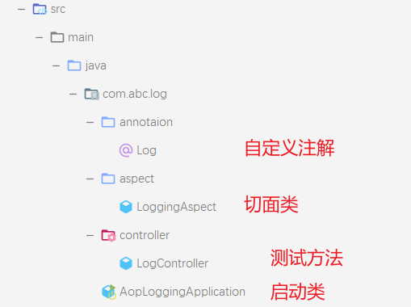

需求描述
在日常开发中，日志是项目开发必不可少的一部分。这里我使用 Spring Boot 利用 AOP 和自定义注解的方式实现日志功能。这样只需要在某一个类、方法或者接口上添加一个我们自定义的注解，就可以利用 AOP 原理在这个类、方法或者接口的前后记录一些日志。
代码实现
项目结构图

Maven 依赖
1
2
3
4
5
6
7
8
9
10
11
12
| <dependencies>
<dependency>
<groupId>org.springframework.boot</groupId>
<artifactId>spring-boot-starter-aop</artifactId>
<version>2.2.12.RELEASE</version>
</dependency>
<dependency>
<groupId>org.springframework.boot</groupId>
<artifactId>spring-boot-starter-web</artifactId>
<version>2.2.12.RELEASE</version>
</dependency>
</dependencies>
|
自定义注解（Log）
注解作用
作用：注解可以被javadoc此类的工具文档化，只负责标记，没有成员取值
作用：注解的生存周期（会保留到哪个阶段），使用枚举类： ElementType声明，主要有：
1
2
3
4
5
6
7
8
9
10
| TYPE（类、接口（包括注解类型）或枚举声明）
FIELD（字段声明）
METHOD（方法声明）
PARAMETER（形参声明）
CONSTRUCTOR（构造函数声明）
LOCAL_VARIABLE（局部变量声明）
ANNOTATION_TYPE（注解类型声明）
PACKAGE（包装声明）
TYPE_PARAMETER（类型参数声明）
TYPE_USE（类型的使用）
|
作用：注解的使用范围（被描述的注解可以用在哪里），使用枚举类：RetentionPolicy 声明，一共有三种：
1
2
3
| SOURCE：源码级别保留，编译后即丢弃
CLASS:编译级别保留，编译后的class文件中存在，在jvm运行时丢弃，这是默认值。
RUNTIME： 运行级别保留，编译后的class文件中存在，在jvm运行时保留，可以被反射调用。
|
代码实现
1
2
3
4
5
6
7
8
9
10
11
| package com.abc.log.annotaion;
import java.lang.annotation.*;
@Documented
@Target(ElementType.METHOD)
@Retention(RetentionPolicy.RUNTIME)
public @interface Log {
int type() default 0;
String value() default "";
}
|
切面类（LogAspect）
==记得添加@Aspect注解，表示这是一个切面类==
1
2
3
4
5
6
7
8
9
10
11
12
13
14
15
16
17
18
19
20
21
22
23
24
25
26
27
28
29
30
31
32
33
34
35
36
37
38
39
40
41
42
43
44
45
46
47
48
49
50
| package com.abc.log.aspect;
import com.abc.log.annotaion.Log;
import org.aspectj.lang.ProceedingJoinPoint;
import org.aspectj.lang.Signature;
import org.aspectj.lang.annotation.Around;
import org.aspectj.lang.annotation.Aspect;
import org.aspectj.lang.annotation.Pointcut;
import org.aspectj.lang.reflect.MethodSignature;
import org.springframework.stereotype.Component;
@Aspect
@Component
public class LogAspect {
@Pointcut("@annotation(com.abc.log.annotaion.Log)")
public void log() {}
@Around(value = "log()")
public Object doAround(ProceedingJoinPoint joinPoint) {
MethodSignature signature = (MethodSignature)joinPoint.getSignature();
Log annotation = signature.getMethod().getAnnotation(Log.class);
int type = annotation.type();
String value = annotation.value();
Object result = null;
try {
System.out.println("日志类型：" + type + " 日志描述：" + value + " 方法执行前的日志打印......");
result = joinPoint.proceed();
System.out.println("日志类型：" + type + " 日志描述：" + value + " 方法执行结果：" + result);
} catch (Throwable throwable) {
System.out.println("日志类型：" + type + " 日志描述：" + value + " 方法执行异常的日志打印......");
throwable.printStackTrace();
} finally {
System.out.println("日志类型：" + type + " 日志描述：" + value + " 方法执行完成的日志打印......");
}
return result;
}
}
|
Controller类
1
2
3
4
5
6
7
8
9
10
11
12
13
14
15
16
17
18
| package com.abc.log.controller;
import com.abc.log.annotaion.Log;
import org.springframework.web.bind.annotation.GetMapping;
import org.springframework.web.bind.annotation.RequestMapping;
import org.springframework.web.bind.annotation.RestController;
@RestController
@RequestMapping("/log")
public class LogController {
@Log(type = 1, value = "测试")
@GetMapping("/ok")
public String logTest() {
System.out.println("方法执行中......");
return "ok";
}
}
|
测试
在浏览器输入url：http://localhost:8080/log/ok
浏览器显示结果：
控制台显示结果：